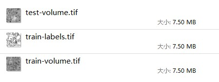
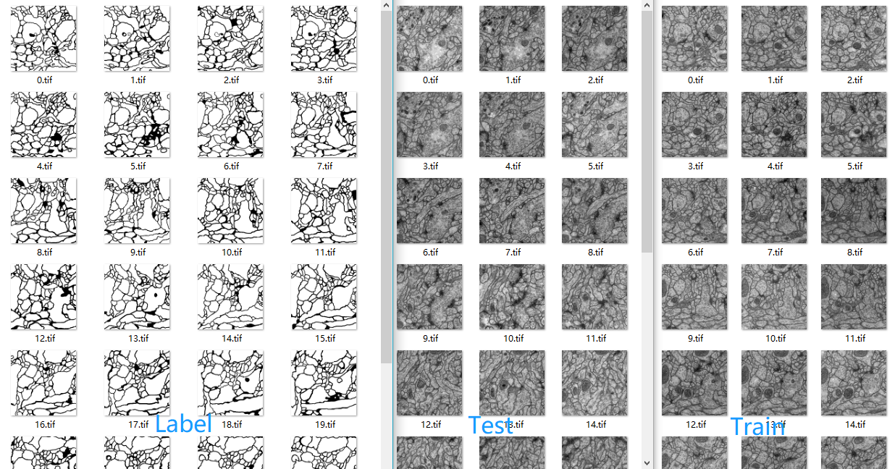

最近完成了一个自己的看到的论文的实验，从零开始从头到尾搭建了一个图像分割网络，来源依据是来源于2015年所提出的图像分割论文，参见此处 ，其采用的数据集是2015年ISBI主办的电子显微镜下的细胞分割挑战赛，其数据集相当小，总计只有30幅训练图和测试图，经过3天的折腾，参考了不少例子，基本上从零开始实现了这个神经网络，并在本地复现。下面是简单的介绍：
数据处理
首先我们需要从比赛官方下载数据集：官方链接 (需注册下载)，我的分享 (如果没有说明还在上传)。我们的数据展示如下：

我们看到的是：
train-volume.tif
训练数据集
train-labels.tif
训练的标签
test-volume.tif
测试集
每个数据文件都由30幅图片组成，共同组成了tif文件(Tag Image File Format，简写为tif,tiff, 一般包含多个图片压缩而成。)，当然我们需要将其分割开。
分割tif文件：
我在下述环境下：
Platform: Windows
Python version: Anaconda2 5.1.0
Python package: libtiff
编写了转换代码：
1 2 3 4 5 6 7 8 9 10 11 12 13 14 15 16 17 18 19 20 21 22 23 24 25 26 27 28 29 30 31 32 33 34 35 36 37 38 39 40 41 """ @author: Waynehfut @contact: Waynehfut@gmail.com @site: http://waynehfut.github.io @software: PyCharm @file: trans_vol.py @time: 2018/2/26 17:30 """ from libtiff import TIFF3D, TIFFimport osclass TIFFtrans : def split_tifs (self, tif_file) : print(tif_file) tif = TIFF3D.open(tif_file + '.tif' ) tif_imgs = tif.read_image() for items in range(tif_imgs.shape[0 ]): img_name = tif_file + "\\" + str(items) + ".tif" image = TIFF.open(img_name, 'w' ) image.write_image(tif_imgs[items]) def merge_tifs (self, sou_path, des_file) : image_dir = TIFF3D.open(des_file, 'w' ) image_array = [] for i in range(len(os.listdir('./' ))): image = TIFF.open(image_dir + str(i) + ".tif" ) image_array.append(image.read_image()) image_dir.write_image(image_array) tiff_tools = TIFFtrans() file_list = ('test-volume' , 'train-labels' , 'train-volume' ) tiff_tools.split_tifs(item)
通过上述切割，将可以完成从压缩的tif文件到单个tif文件的转换 如下图所示：

图片转换扩充
经过分割数据之后，发现之前的数据量相对较少，为了实现图像的分割，需要对数据进行增强，增强的方法是将原始图片作为一个通道（通道0），将边缘作为另一个通道（通道1）。因为原始数据是灰度图的原因，故而三个通道的图片可以承载全部数据。将这些数据合并到一个三通道的图像上后，我们利用前文 提到的ImageDataGenerator方法实现数据扩充。 具体做法参见如下部分：
合并原始图像和标签图像的过程
1 2 3 4 5 6 7 8 9 10 11 12 13 for i in range(len(trains)): img_t = load_img(path_train + "/" + str(i) + "." + imgtype) img_l = load_img(path_label + "/" + str(i) + "." + imgtype) x_t = img_to_array(img_t) x_l = img_to_array(img_l) x_t[:, :, 2 ] = x_l[:, :, 0 ] img_tmp = array_to_img(x_t) img_tmp.save(path_merge + "/" + str(i) + "." + imgtype) img = x_t img = img.reshape((1 ,) + img.shape) savedir = path_aug_merge + "/" + str(i) if not os.path.lexists(savedir): os.mkdir(savedir)
合并后的图像示例如下(因为0通道和2通道合并的关系，灰度图会变为紫色)：
执行扩充操作
1 2 3 4 5 6 7 8 9 10 11 def doAugmentate (self, img, save_to_dir, save_prefix, batch_size=1 , save_format='tif' , imgnum=30 ) : datagen = self.datagen i = 0 for batch in datagen.flow(img, batch_size=batch_size, save_to_dir=save_to_dir, save_prefix=save_prefix, save_format=save_format): i += 1 if i > imgnum: break
在这个部分，我们总计扩展了30次，需要注意的是，这里的 self.datagen 已经预定义为:
1 2 3 4 5 6 7 8 self.datagen = ImageDataGenerator( rotation_range=0.2 , width_shift_range=0.05 , height_shift_range=0.05 , shear_range=0.05 , zoom_range=0.05 , horizontal_flip=True , fill_mode='nearest' )
一个扩充示例如下(做了相位平移和边缘裁切)：
aug.png
分割扩充后的数据
1 2 3 4 5 6 7 8 9 10 11 12 13 14 15 16 17 for i in range(self.slices): path = path_merge + "/" + str(i) print(path) train_imgs = glob.glob(path + "/*." + self.img_type) savedir = path_train + "/" + str(i) if not os.path.lexists(savedir): os.mkdir(savedir) savedir = path_label + "/" + str(i) if not os.path.lexists(savedir): os.mkdir(savedir) for imgname in train_imgs: midname = imgname[imgname.rindex("/" ) + 1 :imgname.rindex("." + self.img_type)] img = cv2.imread(imgname) img_train = img[:, :, 2 ] img_label = img[:, :, 0 ] cv2.imwrite(path_train + "/" + str(i) + "/" + midname + "_train" + "." + self.img_type, img_train) cv2.imwrite(path_label + "/" + str(i) + "/" + midname + "_label" + "." + self.img_type, img_label)
至此，我们完成了数据扩充任务。并且从原来的30个图变为了30*30=900张图片。 如下图所示：
下一篇将会说，这些数据如何在实践中的使用。以及如何进行分割，完整项目将在这个系列更新完后上传到github ，欢迎查看。